Sac Kesim Cam Çerçeve Teslim Kontrol Rehberi
Lazerde kesilen sac parçaların, tedarikçiden gelen camların ve çerçevelerin teslim alındığı uygulama. Rehber iki bölümden oluşur: önce sekmeler ve pencereler tek sayfada özetlenir, ardından her biri demo siparişlerle adım adım anlatılır. Ekranlardaki bütün veriler uydurmadır: uygulama demo modunda, BK Sipariş rehberiyle aynı yerel test veritabanıyla açılmıştır.
Uygulama ne işe yarar?
Teslim Kontrol, üretimde ve depoda gelen malzemelerin teslim alınması, kalite kontrolü ve stok hareketleri için kullanılan uygulamadır.
Başlarken
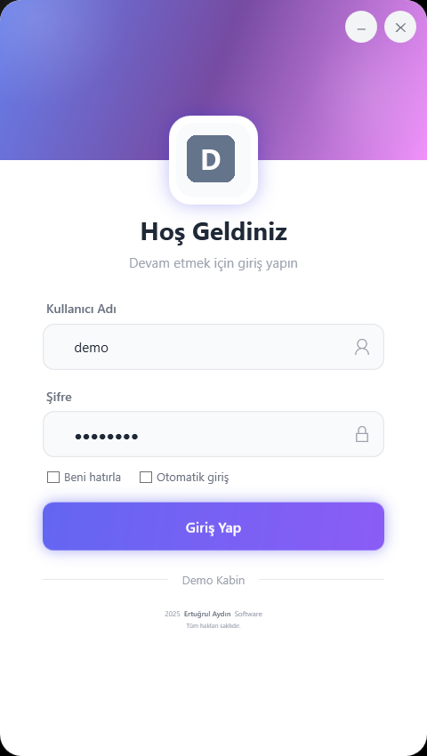
- Kullanıcı adı ve şifrenizle girin. Beni hatırla bilgileri saklar, Otomatik giriş bir sonraki açılışta sizi doğrudan içeri alır.
- Veritabanına ulaşılamazsa giriş ekranında Tekrar Dene, Ayarlar ve Firebase ile Giriş seçenekleri çıkar. Firebase oturumunda yalnızca talep oluşturma ve Taleplerim kullanılabilir.
- Üst çubukta oturum açan kişi ve dört düğme bulunur: Talep Oluştur, Taleplerim, talep senkronu (🔄) ve Ayarlar. Çıkış oturumu kapatır.
- Sağ üstteki renk anahtarı satır renklerini açıklar: Teslim Edildi yeşil, Eksik turuncu, Fazla mavi, Kesildi mor, Büküldü pembe.
- Listeler her 15 saniyede bir kendiliğinden yenilenir; Yenile ile hemen yenileyebilirsiniz.
Sekmeler ve pencereler
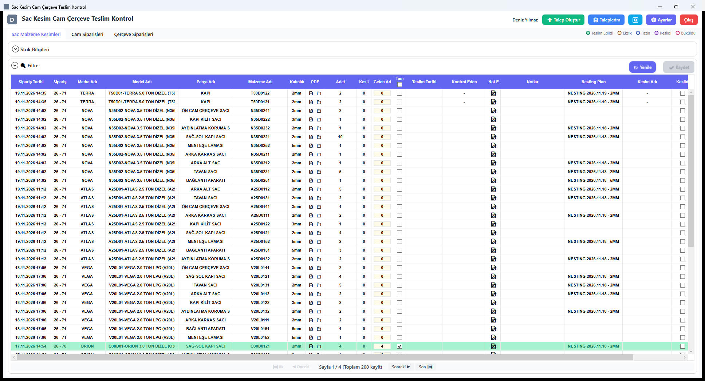
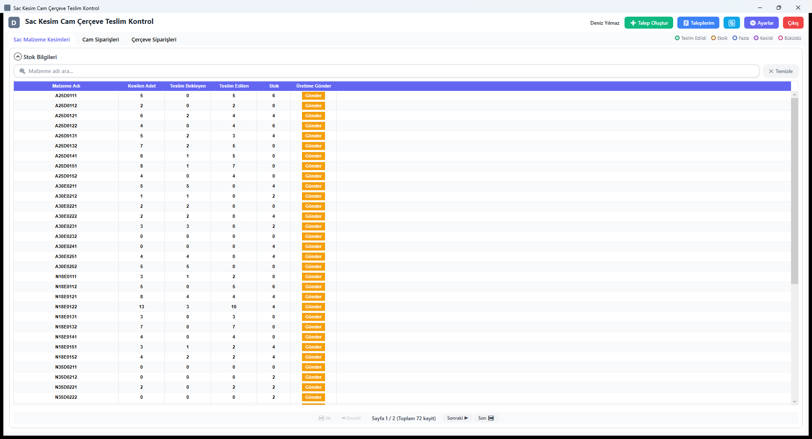
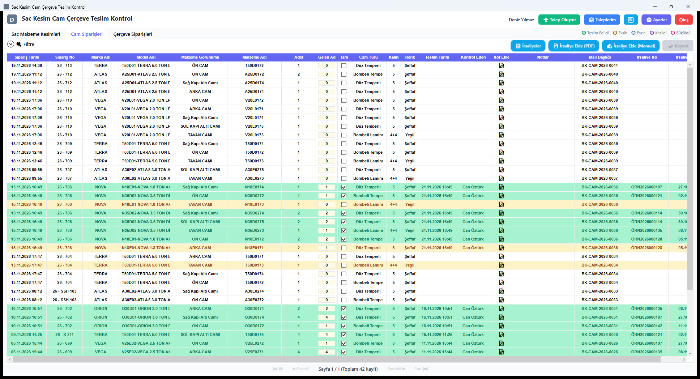
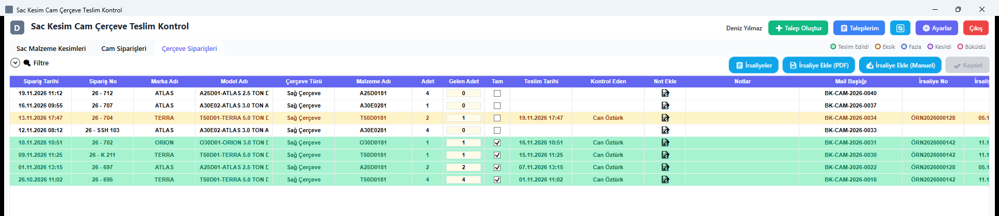
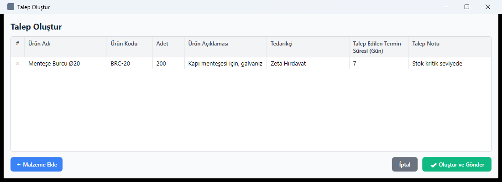
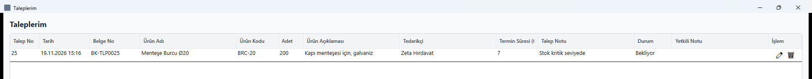
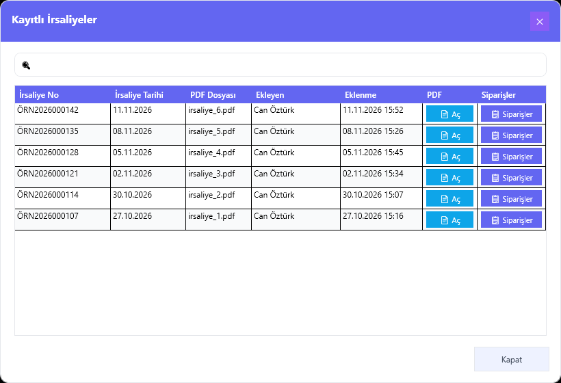
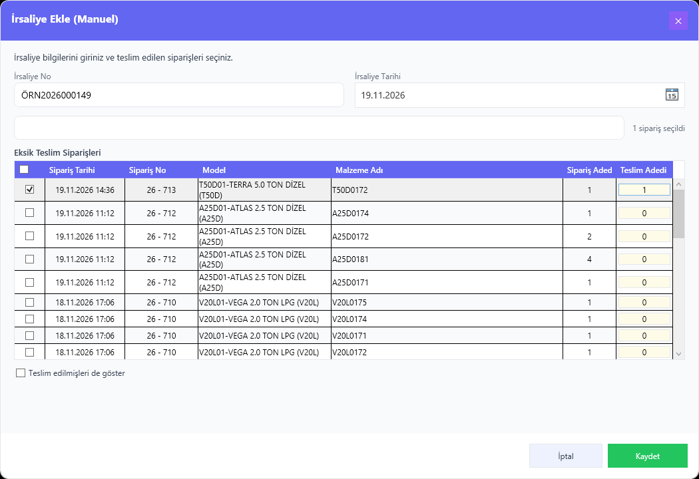
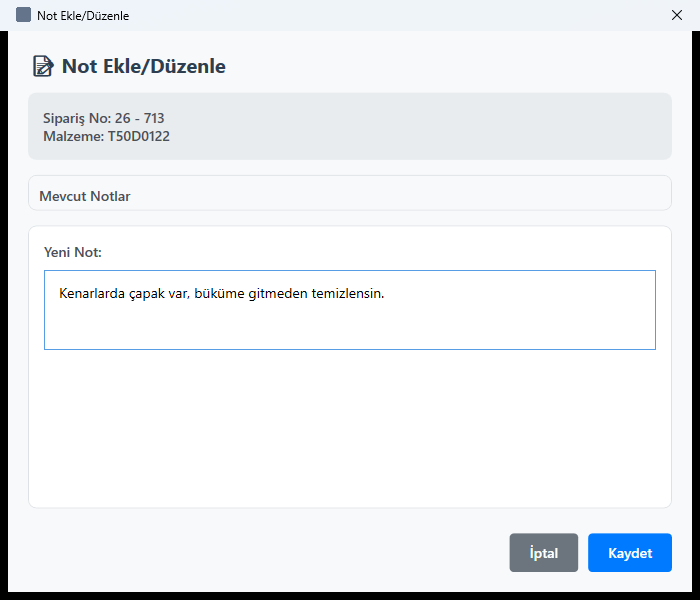
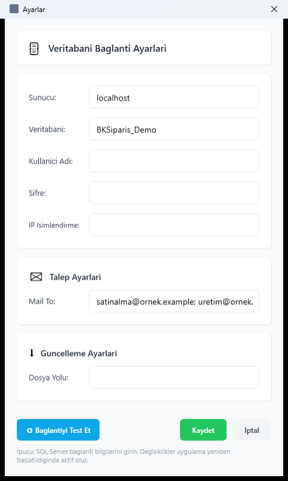
Sac Malzeme Kesimleri
- Her satır bir siparişin bir sac parçasıdır. PDF sütunundaki 📄 parçanın çizimini, 📁 bulunduğu klasörü açar.
- Gelen Ad kutusuna teslim alınan adedi yazın ya da Tam kutusunu işaretleyin. Değişiklikler sayılır (“2 değişiklik bekliyor”) ve Kaydet ile birlikte yazılır.
- Kaydedilen satıra teslim tarihi ve Kontrol Eden olarak sizin adınız yazılır; satır rengi adede göre yeşil, turuncu ya da mavi olur.
- Nesting Plan, Kesim Adı, Kesildi, Nested ve Planlandı sütunları parçanın lazer tarafındaki durumunu gösterir.
- Liste sayfalıdır; alttaki İlk, Önceki, Sonraki ve Son ile gezinin.
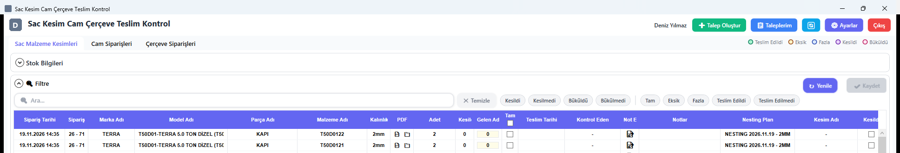
Örnek: 26 - 713 sac parçalarının teslim alınması
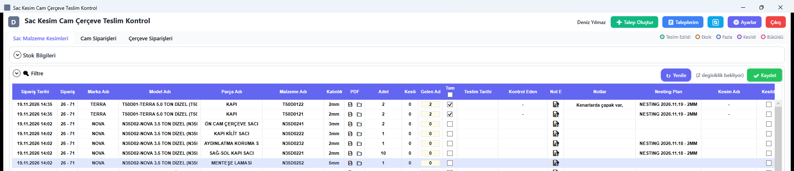
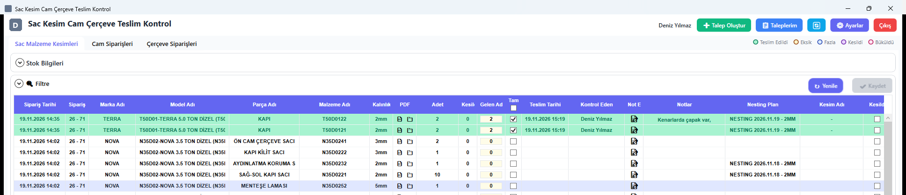
Stok Bilgileri
- Bölümü başlığına tıklayarak açıp kapatın; üstteki kutuda malzeme koduna göre arayın.
- Gönder düğmesi, stoktaki parçayı üretime gönderir ve stoktan düşer. Adet sorulur.
Cam Siparişleri
- Satırlar sac sekmesindeki gibi çalışır: Gelen Ad, Tam, notlar ve Kaydet.
- Mail Başlığı camın hangi sipariş mailiyle istendiğini (BK-CAM-…) gösterir; İrsaliye No ve tarihi irsaliye bağlandıkça dolar.
- Üstteki düğmeler: İrsaliyeler kayıtlı irsaliyeleri listeler, İrsaliye Ekle (PDF) tedarikçi irsaliyesini PDF’ten okuyup satırlarla eşleştirir, İrsaliye Ekle (Manuel) irsaliyeyi elle girmenizi sağlar.
İrsaliyeler
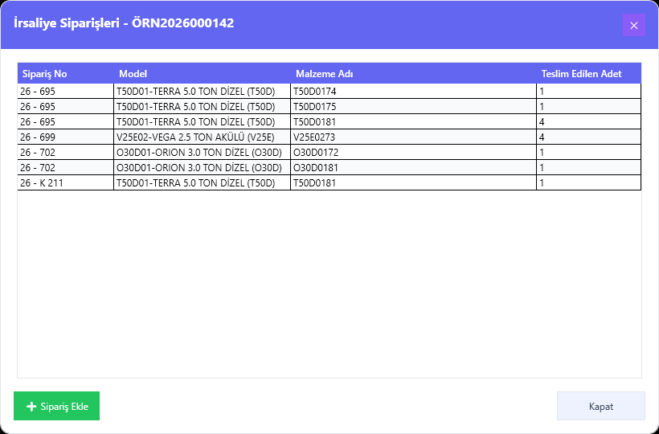
İrsaliye Ekle (PDF) irsaliye PDF’indeki tabloyu okur, malzeme kodlarını açık cam siparişleriyle eşleştirir ve teslim adetlerini önerir. PDF elinizde değilse manuel ekleme kullanılır.
Örnek: 26 - 713 camının manuel irsaliyeyle kapatılması
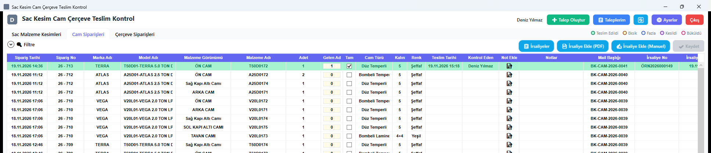
Çerçeve Siparişleri
- Cam sekmesiyle aynı düğmeler ve aynı teslim akışı geçerlidir; irsaliye düğmeleri bu sekmede çerçeve siparişleriyle çalışır.
Talep Oluştur ve Taleplerim
- Talep Oluştur penceresinde her satır bir malzemedir. Malzeme Ekle yeni satır açar, satır başındaki ✕ satırı siler.
- Ürün adı ya da kodu yazarken öneri listesi açılır; ↓ ve Enter ile seçin. Tedarikçi alanı da aynı şekilde önerilir.
- Adet, açıklama, talep edilen termin (gün) ve not girip Oluştur ve Gönder’e basın. Talep numarası (BK-TLP…) verilir ve satın almaya giden Outlook taslağı açılır; mail kendiliğinden gitmez.
- Taleplerim açtığınız talepleri durumlarıyla gösterir. Bekleyen talebi ✎ ile düzeltebilir, 🗑 ile silebilirsiniz; silince iptal maili taslağı açılır. Eksik bilgi istenen talep olursa düğmede sayılı bir rozet çıkar.
Örnek: menteşe burcu talebi
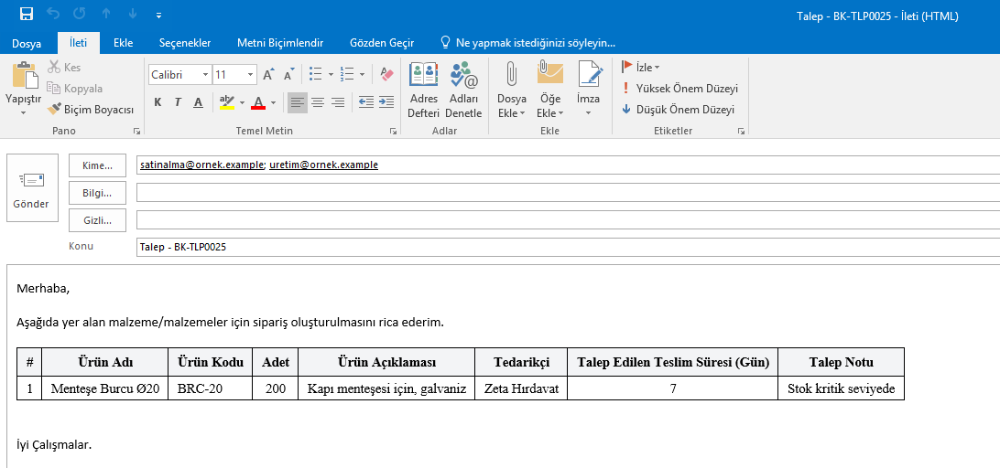
Notlar
- Her sekmede satırın Not Ekle sütunundaki 📝 düğmesi notlar penceresini açar.
- Pencerede sipariş no ve malzeme yazar; Mevcut Notlar önceki notları yazanı ve tarihiyle listeler. Yeni notu yazıp Kaydet’e basın; not satırın Notlar sütununda görünür.
Ayarlar
- Veritabanı Bağlantı Ayarları: sunucu, veritabanı, kullanıcı adı, şifre. IP İsimlendirme, sunucu IP’siyle açılamayan PDF ve klasör yollarını sunucu adıyla dener.
- Talep Ayarları › Mail To: talep ve iptal maillerinin alıcıları (noktalı virgülle).
- Güncelleme Ayarları › Dosya Yolu: yeni sürümün okunacağı klasör.
- Bağlantıyı Test Et girilen bilgilerle bağlanmayı dener; Kaydet ayarları yazar, değişiklik uygulama yeniden açılınca etkin olur.